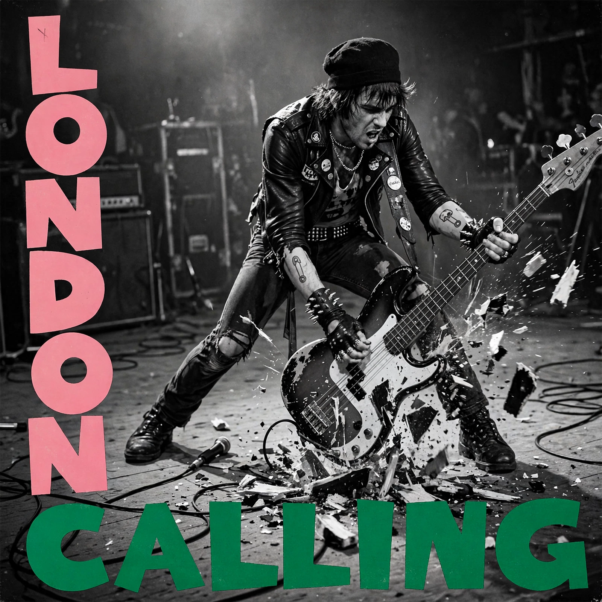

London Calling
From Wikipedia, the free encyclopedia
| Studio album by | The Clash |
|---|---|
| Released | 14 December 1979 |
| Recorded | August–November 1979 |
| Studio | Wessex Sound, London |
| Genre | Post-punk, punk rock |
| Length | 65:07 |
| Label | CBS |
| Producer | Guy Stevens |

London Calling is the third studio album by the English punk rock band The Clash. It was released as a double album in the United Kingdom on 14 December 1979 by CBS Records, and in the United States in January 1980 by Epic Records. The album marks a major shift in the band's style, incorporating a broader range of styles including ska, reggae, rockabilly, soul, hard rock, and pop — an eclectic approach that broadened the punk movement's musical vocabulary.
The album's cover photograph, taken by Pennie Smith at the Palladium in New York City on 20 September 1979, shows bassist Paul Simonon smashing his bass guitar against the stage; it has been named one of the most famous rock photographs of all time. The cover's typography and color scheme were directly inspired by Elvis Presley's self-titled debut album.
Content and themes
The album's themes include social displacement, unemployment, racial conflict, drug use, and the responsibilities of adulthood. Notable tracks include the title track "London Calling", "Train in Vain", "Spanish Bombs", "Lost in the Supermarket", "Clampdown", "The Guns of Brixton", "Death or Glory", "Rudie Can't Fail", and "Jimmy Jazz".
Reception and legacy
London Calling received widespread critical acclaim and is frequently ranked among the greatest albums of all time. In 1989, Rolling Stone named it the best album of the 1980s (as it was released in the US in January 1980); in 2020, the magazine ranked it number 16 on its list of the 500 greatest albums of all time. The album was certified platinum in the US and has sold over five million copies worldwide. In 2007, it was inducted into the Grammy Hall of Fame.
Track listing
Side one opens with "London Calling" and includes "Brand New Cadillac", "Jimmy Jazz", "Hateful", and "Rudie Can't Fail". Side two features "Spanish Bombs", "The Right Profile", "Lost in the Supermarket", "Clampdown", and "The Guns of Brixton". Side three includes "Wrong 'Em Boyo", "Death or Glory", "Koka Kola", "The Card Cheat", and "Lover's Rock". Side four contains "Four Horsemen", "I'm Not Down", "Revolution Rock", and "Train in Vain".